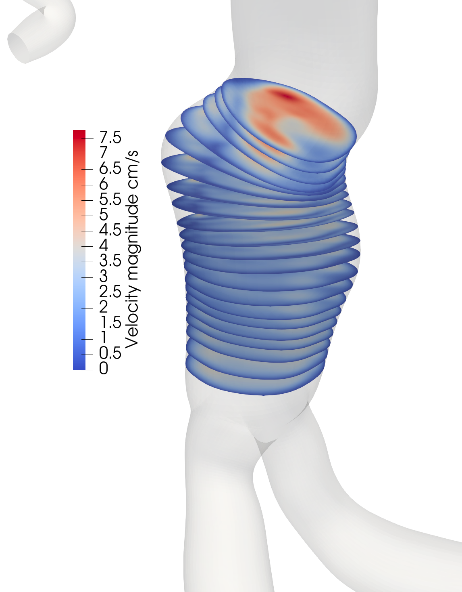

validating the use of machine learning for segmenting abdominal aortic aneurysms from CT and MR images for hemodynamic simulations

This work is done in collaboration with Gala Sanchez Van Moer, PhD student, and the Shadden lab at UC Berkeley.
Patient-specific hemodynamic simulations have become an important part of cardiovascular research. These simulations depend on construction of anatomically accurate 3D geometric models of cardiovascular structures, in most cases using medical image scans (CT/MR) of the appropriate region. In the case of blood vessels, the model construction pipeline is time-consuming and costly, but we have developed a machine learning approach to automate this process.
However, the accuracy of the machine learning models must be validated to ensure that they produce results that are comparable to those obtained from traditional methods. This project investigates the effect of machine learning obtained models on hemodynamic simulations, comparing the results from machine learning segmentations to those obtained from expert manual segmentations.
SeqSeg is a machine learning approach to segment CT and MR images of blood vessels. It uses a deep learning neural network to automatically track and segment blood vessels from medical images. The approach is based on local processing, where a small segment of the blood vessel is processed at a time. A seed point is used to initialize tracking, and a subvolume around the blood vessel segment is extracted and segmented using the neural network. The segmented volume is then processed into a surface mesh representation, from which a centerline is extracted and used to determine the next point to move to. In the case of bifurcations, other centerline branches are stored in a queue for subsequent tracking after the current branch has been tracked down.
SimVascular is an open-source software platform for cardiovascular modeling that provides tools for image segmentation, mesh generation, and hemodynamic simulations. It is widely used in the field of cardiovascular research and has been validated against experimental data.
SvSolver is a module within SimVascular that provides tools for performing hemodynamic simulations. It uses finite element methods to solve the Navier-Stokes equations governing blood flow and can simulate blood flow in complex geometries.
Work in progress. The results will include a comparison of the hemodynamic simulations obtained from machine learning segmentations and those obtained from expert manual segmentations. The accuracy of the machine learning models will be assessed by comparing the flow rates, pressure distributions, and other hemodynamic parameters obtained from both methods. Additionally, the computational efficiency of the machine learning approach will be evaluated in terms of time savings compared to traditional methods.
Here are some more articles you might like to read next: